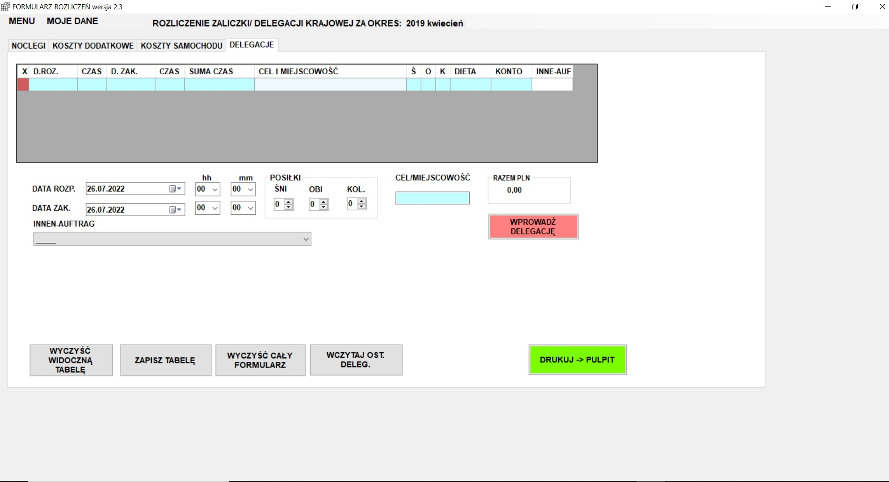
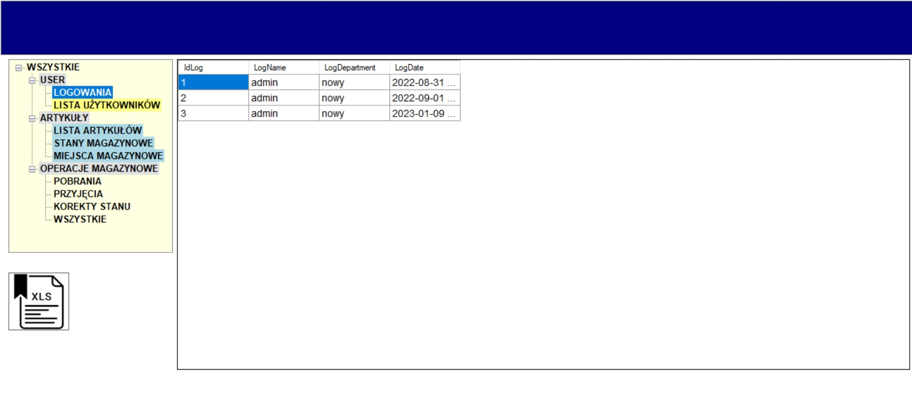
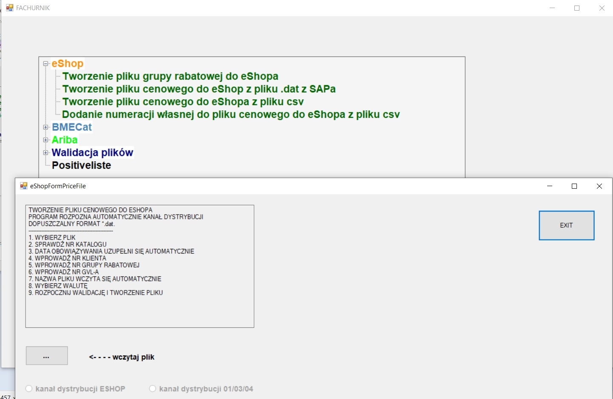

A small software based on WinForm C# enables:
creating PDF summary of setting an advace
a multi-chossing of currency
all data are stored in XML

A warehouse software projected in two technologies: WinForm C#/MS SQL Serwer and PHP/MySQL
It enables:
stock movements of items like: withdraw and receipt
users grading depends on rights
reports

Small software for proccessing of I/O SAP's files.
Technology: WinForm C# To speed up business processes
I came up with new tool, which replaces completely using of Excel.
Using few mouse-click I got awaited converted text price-file. No more grapple with Excel.